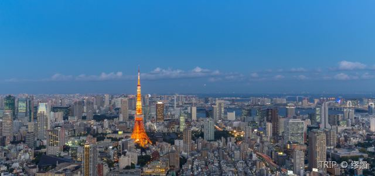

Asia: Japan
-
Tokyo is the capital city of Japan. Despite being a hub of commerce, fashion and finance, the city has still managed not to lose sight of its ancient traditions. It’s a leader in Asian fashion and a city of art, with its warm and intimate “izakaya”(pubs) hidden away in small side alleys, blend of people of different backgrounds in the Shimokitazawa District, animation and high-tech companies.